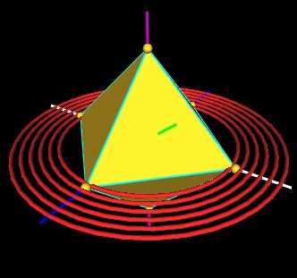
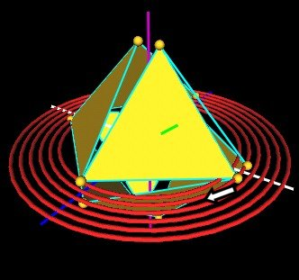
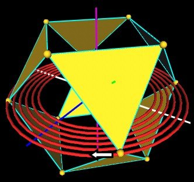
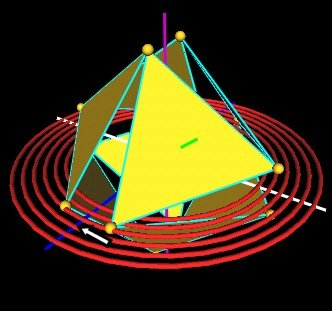
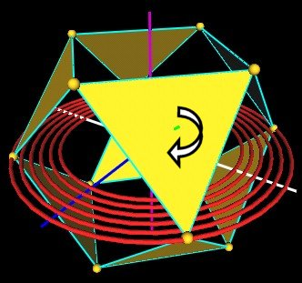
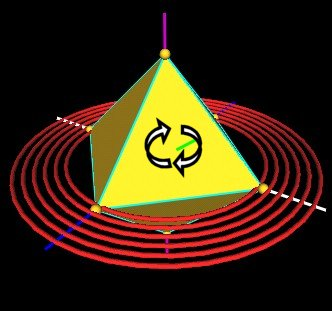

Here is a bit of interesting information about the Jitterbug motion.
Consider a single Jitterbug.
|  |
| Click For Movie |
In this illustration, I show the 3 x (blue), y (white), and z (purple) axes. Plus one of the axes (green) about which one of the Jitterbug triangular faces will rotate (and slide along).
Now,also shown are 6 rings (red) used here only to represent a plane.
Consider the vertex sphere at the on the y (white) axis. As the Jitterbug does it thing, this vertex sphere will split into 2 vertex spheres. One of these 2 vertex spheres will rotate in the plane toward the x (blue) axis.
|  |
| vertex splits into 2. |
Following this vertex sphere, you will see that it is always moving in the plane shown by the 6 red rings.
|  |  |
| Vertex moves in the red ring plane to the x (blue) axis. | |
| Final position, same as start position. |
The vertex moves from the y axis to the x axis, always in the red ring plane.
This is a total of 90 degrees. X-axis to Y-axis = 90 degree rotation.
Now consider the same motion but from the point of view of the triangle's rotation axis (green).
Watching the triangle motion about the rotation (green) axis, you will see that as the triangle rotates from the initial Octahedron position, through the open position (of the VE) and back to an Octahedron (closed) position the triangle actually rotate by 120 degrees.
|  |
| Rotation about green axis (60 degrees). |
|  |
| Rotation about green axis (120 degrees). |
Of course, we did nothing different than we did in the first case.
Except to change the axis about which we measured the rotation angle.
In the 1st case, it looked like we rotated the vertex sphere about the z (purple) axis, by an angular amount of 90 degrees.
But what is really happening is a rotation of the trianlge about the green axis by an angular amount of 120 degrees. (We seem to have lost 30 degrees!)
Both cases are "real". Both physically happen.
It all depends on your reference point.
This makes me wonder about the Quantum Mechanic treatment of spin 1/2 particles in which applying a 360 degree rotation operator to the spin 1/2 particle's wave function only changes the wave function by 180 degrees. Is this a rotation axis reference illusion as above? Might there not be another axis (maybe in a higher dimension?) about which the particle is really rotating (green axis) but we are only experiencing the red ring plane motion rotating about the z (purple) axis?